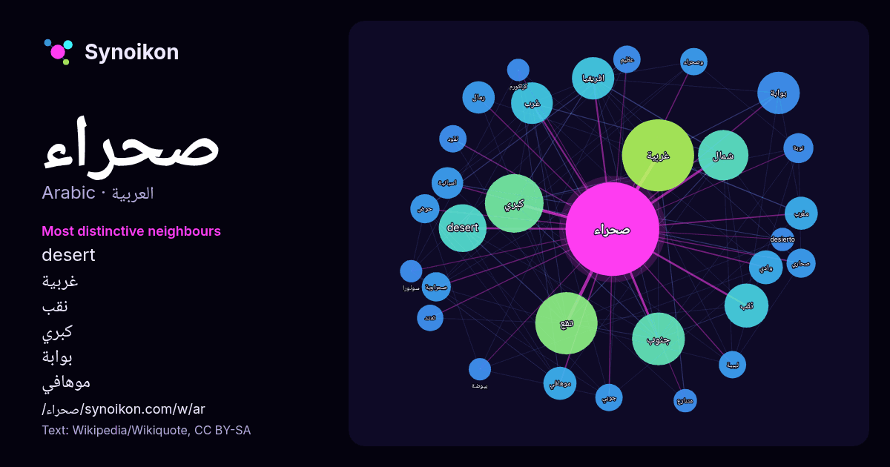

العربية · قائمة كلمات اليوم
صحراء
“desert” · الكلمات الموجودة حولها في 1072 ورودًا من ويكيبيديا, Wikiquote.

الجيران الأكثر تميّزًا
- desert 47×
- غربية 41×
- نقب 38×
- كبري 31×
- بوابة 29×
- موهافي 23×
- رمال 20×
- صحاري 17×
- صحراوية 16×
- وصحراء 16×
- جوبي 16×
- نفود 16×
- نوبة 16×
- تقع 15×
- افريقيا 14×
- ليبية 14×
- حوض 13×
- شمال 13×
- جنوب 13×
- غرب 12×
× = كم مرة أكثر مما في نصوص ويكيبيديا العامة.
الجيران الأكثر تكرارًا
- غربية 104
- منطقة 82
- تقع 78
- كبري 69
- جنوب 56
- شمال 51
- desert 46
- نقب 39
- افريقيا 36
- بوابة 36
- غرب 35
- اكبر 34
- شرق 28
- مصر 27
- بحر 25
- فيلم 25
- جزء 23
- وادي 23
- مغرب 22
- موهافي 22
في السياق
- الصمان صحراء البيوضة صحراء الحوض العظيم صحراء جوبي صحراء سونورا صحراء كواخيرا صحراء كاركروس صحراء كراكورم صحراء موهافي صحراء كالهاري صحراء كوير صحراء كولورادو Wikipedia snippets · صحراء
- الصحراء الغربية هي منطقة متنازع عليها في شمال غرب إفريقيا. تبلغ مساحتها 266,000 كيلومتر مربع. ما يقرب من 30% من الأراضي أي 82,500 كيلومتر مربع (8,250 Wikipedia snippets · الصحراء الغربية
- الصحراء الكبرى هي صحراء تحتل الجزء الأكبر من شمال إفريقيا، وهي أكبر الصحاري الحارة في العالم بمساحة تفوق الـ9 ملايين كم مربعا، وثاني أكبر صحراء في العالم Wikipedia snippets · الصحراء الكبرى
- صحراء النفود الكبير تقع في السعودية، وأحد أقاليم نجد المشهورة في مناظرها الخلابة برمالها الذهبية في هضبة نجد وحتى الحدود الغربية للعراق والحدود الشرقية Wikipedia snippets · صحراء النفود الكبير
- صحراء الدهناء تعتبر الدهناء من صحاري المملكة العربية السعودية، تبلغ مساحتها 45,000 كم2، وتقع ضمن منطقة الحدود الشمالية وحائل والقصيم والمنطقة الشرقية Wikipedia snippets · صحراء الدهناء
- صحراء جوبي (بالصينية: هانهاي) هي صحراء مترامية الأطراف في شرق آسيا. وتُغطي أجزاء من شمال وشمال شرق الصين وجنوب منغوليا. تفصل ما بين منغوليا الداخلية ومنغوليا Wikipedia snippets · صحراء جوبي
- جغرافيا أخفض في الوسط من الأطراف. وقد كان الاسم معروفا في الخرائط الأولى للصحراء الكبرى، التي رسمها الرحالة المسلمون والأوروبيون قبل الاستعمار بفترة طويلة Wikipedia snippets · أزواد
- هل تبحث عن؟ الصحراء الزرقاء: منطقة صحراوية شهيرة بالطلاء الأزرق في سيناء بالقرب من سانت كاترين. صحراء زرقاء (فيلم): فيلم أمريكي إنتاج 1998 من بطولة كيت Wikipedia snippets · صحراء زرقاء (توضيح)
كلمات أخرى
- أغنية
- إله
- تاريخ
- جبل
- جرس
- جزيرة
- جسر
- حديقة
- حصان
- حقيقة
- حياة
- خبز
- خريطة
- خريف
- ذهب
- زمن
- ساعة
- شاي
- شتاء
- صحة
- صمت
- صيف
- طبيعة
- طريق
- طعام
- ظل
- عائلة
- عاصفة
- عسل
- علم
- عمل
- غابة
- فن
- قطار
- قطة
- قلب
- قوة
- كلب
- لغة
- ماء
- مال
- مدينة
- مرآة
- مطر
- ملح
- مناخ
- موت
- نجم
- والدة
حُسبت مسبقًا في 2026-10-09 بالإعدادات الافتراضية (±5 كلمات، مدوّنة متوسطة). يمكن للخريطة التفاعلية تحديثها ببيانات حية.
واجهة مترجمة آليًا؛ نرحب بالتصحيحات.